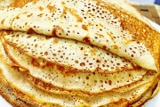

Торт «Сластена»Ингредиенты
100 г муки, 2 яйца, 50 г крахмала, 75 г молотых грецких орехов, 100 мл растительного масла, 200 мл молока, соль по вкусу.
Для начинки: 250 г творога, 50 мл молока, 1 лимон, 50 г сахарной пудры, 200 г свежезамороженной малины, 75 г сахара.
Способ приготовления
Замесить тесто из крахмала, муки, молотых орехов, яичных желтков, молока и соли. Ввести взбитые белки, осторожно перемешать. Выпекать небольшие блинчики на раскаленной, смазанной растительным маслом сковороде.
Для приготовления начинки творог смешать с молоком. Лимон вымыть, обсушить, натереть цедру и добавить ее к творогу. Отжать сок из лимона и смешать с полученной массой. Посыпать сахарной пудрой. Малину разморозить.
Один блинчик намазать творожной массой, накрыть вторым, сверху выложить малину, накрыть третьим блинчиком – сверху творог и т. д. Торт поставить в прохладное место на 1–2 часа.
Пирог из блинчиков с орехамиИнгредиенты
200 г муки, 400 мл молока, 2 яйца, 25 г сахара, 100 мл растительного масла, соль по вкусу.
Для запекания: 100 г измельченных грецких орехов, 50 г сахара, 100 г повидла.
Для крема: 3 яичных белка, 60 г сахарной пудры.
Способ приготовления
Яйца смешать с молоком, помешивая, постепенно всыпать муку, добавить соль, тщательно перемешать.
Блинчики выпекать на раскаленной, смазанной растительным маслом сковороде.
Для приготовления крема белки взбить в густую пену, добавить сахарную пудру и снова взбить над паром. Готовый крем должен иметь густую консистенцию.
Готовые блинчики нарезать лапшой, смешать с орехами и сахаром. Полученную массу выложить в смазанную маслом форму, намазать повидлом и покрыть белковым кремом.
Пирог поместить в нагретую до 150 °C духовку и выпекать до готовности.
Рулет из блинчиков с яблоками и клюквойИнгредиенты
200 г муки, 400 мл молока, 2 яйца, 25 г сахара, 100 мл растительного масла, 100 г готовой помадки, соль по вкусу.
Для начинки: 200 г обезжиренного творога, 4 яблока, 50 г клюквы, 40 г жидкого меда, 2 г корицы.
Способ приготовления
Яйца смешать с молоком, помешивая, постепенно всыпать муку, добавить соль и сахар, тщательно перемешать.
Блинчики выпекать на раскаленной, смазанной растительным маслом сковороде.
Для приготовления начинки яблоки вымыть, очистить от кожицы, удалить сердцевину, залить небольшим количеством воды и тушить на слабом огне до размягчения. Готовые яблоки протереть через сито. Клюкву перебрать, вымыть, обсушить, отжать сок. Смешать яблочное пюре и клюквенный сок. Творог смешать с яблоками и клюквой, полить жидким медом и посыпать корицей, тщательно перемешать.
Выпеченные блинчики выложить на льняную ткань так, чтобы один блинчик заходил на другой и чтобы весь пласт можно было свернуть рулетом.
Выложить на подготовленные блинчики начинку, немного отступив от краев, свернуть рулетом и уложить на смазанный растительным маслом противень.
Рулет запекать в разогретой до 150 °C духовке в течение 30 минут. Готовый рулет покрыть помадкой.
Блинчатый рулет с мясным фаршемИнгредиенты
200 г муки, 400 мл молока, 2 яйца, 5 г сахара, 100 мл растительного масла, 100 г твердого сыра, 70 мл молочного соуса, соль по вкусу.
Для начинки: 400 г мясного фарша, 1 головка репчатого лука, 1 яйцо, 2 зубчика чеснока, 1 клубень картофеля, 70 мл растительного масла, соль, перец по вкусу.
Способ приготовления
Яйца смешать с молоком, помешивая, постепенно всыпать муку, добавить соль и сахар, тщательно перемешать.
Блинчики выпекать на раскаленной, смазанной растительным маслом сковороде.
Для приготовления начинки мясной фарш посолить, поперчить. Репчатый лук очистить, вымыть, нарезать тонкими полукольцами. Чеснок очистить, вымыть, измельчить. Картофель очистить, вымыть, натереть на крупной терке. Репчатый лук обжарить в разогретом растительном масле, добавить фарш, чеснок и картофель, тушить до готовности фарша. В начинку добавить яйцо, тщательно перемешать.
Выпеченные блинчики выложить на льняную ткань так, чтобы один блинчик заходил на другой и чтобы весь пласт можно было свернуть рулетом. Выложить на подготовленные блинчики начинку, немного отступив от краев, свернуть рулетом и выложить на противень, смазанный растительным маслом. Покрыть рулет ровным слоем молочного соуса, посыпать тертым сыром и сбрызнуть маслом.
Рулет запекать в разогретой духовке до румяного цвета. Готовый рулет перед подачей к столу нарезать порционными кусками. Отдельно можно подать сливовый соус.